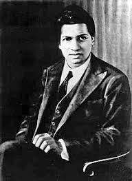

Srinivasa Ramanujan (1887–1920)

Srinivasa Ramanujan was an Indian mathematician known for his extraordinary contributions to mathematical analysis, number theory, infinite series, and continued fractions. Despite having little formal training, his raw genius and self-taught insights have made him one of the most celebrated mathematicians in history.
Key Contributions:
- Developed groundbreaking results in number theory, including the Ramanujan prime and the Ramanujan theta function.
- Made significant contributions to the study of infinite series and continued fractions, including the discovery of many rapidly converging infinite series for π.
- Formulated the famous Ramanujan-Hardy number, 1729, which is known as the "Ramanujan-Hardy number" for its intriguing properties in number theory.
- Introduced the concept of mock theta functions, which have had a profound impact on modern mathematics and mathematical physics.
Fun Facts:
- Ramanujan had no formal training in mathematics but created thousands of theorems, many of which were later proven to be true.
- He was largely self-taught, relying on his intuition and deep connections to the mathematical universe.
- Ramanujan was invited to Cambridge University by the renowned mathematician G.H. Hardy, and together, they produced some of the most remarkable results in mathematics.
Legacy:
Srinivasa Ramanujan's work has had a lasting impact on mathematics, especially in number theory, mathematical analysis, and the theory of partitions. His discoveries have influenced modern research in several areas of mathematics, and his legacy is celebrated worldwide. Ramanujan's work continues to inspire mathematicians and has played a key role in the development of various branches of mathematics, including algebra, analysis, and cryptography.
← Back to Timeline